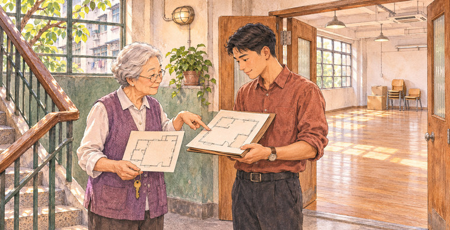

租賃少了一層樓

權利改變，租賃才改變
香港會計師公會在其質素保證報告中討論租賃範圍縮減。本案的虛構承租人先把一層樓空置，其後才簽署新協議交還該樓層的使用權。
課堂決策
一家香港培訓工作室以同一份合約租用兩個條件相同的樓層。員工在 7 月 1 日搬往樓上，但承租人依然控制兩層。租金、租期和權利沒有改變，出租人未同意作任何改動。假設沒有獨立的減值，也沒有合約訂明的提前解約選擇權。
按照租賃明細表，完成截至該日的一般會計處理後，租賃負債為 840,000 港元，使用權資產為 760,000 港元。兩項決策在同一天作出，未發生下一筆預定變動，因此這也是訂立協議前一刻的結餘。兩層面積相同，所給予的權利相等，一層佔租賃範圍的 50%。
| 財務主管就空置提出的分錄 | 港元 |
|---|---|
| 減少使用權資產 | 380,000 |
| 減少租賃負債 | 420,000 |
| 確認擬入賬收益 | 40,000 |
你會批准還是否決因樓層空置而擬作出的分錄？哪項合約證據會改變決定？目前應保留甚麼賬面結餘？
第二輪：補充資料
雙方現簽署即時生效的修訂協議，永久交還一層而不必支付罰款。按具約束力的新條款，保留的一層在未來 2 年每年年結支付 210,000 港元。修訂後的年折現率是 5%。沒有其他付款、修改、優惠或獨立服務。
在協議生效日，計算部分終止租賃的收益及兩項最終結餘。為何重新計量保留樓層不會產生第二筆收益？
第一項決策時，未交還任何權利
不批准空置分錄。可執行的權利未有改變，當時仍保留 840,000 港元租賃負債及 760,000 港元使用權資產，並繼續一般會計處理。確認租賃範圍縮減前，須取得已簽署的修訂協議，並核實生效日。
扣除交還的一半
於修訂協議生效日，原租賃負債減少 420,000 港元，使用權資產減少 380,000 港元，差額 40,000 港元為收益。重新計量前，負債和資產結餘分別為 420,000 港元和 380,000 港元。
只重新計量保留的使用權
折現兩筆付款：210,000 / 1.05＋210,000 / 1.05² ≈ 390,476 港元。剩餘租賃負債減少約 29,524 港元，使用權資產同額調減。最終資產約 350,476 港元，負債約 390,476 港元。40,000 港元收益只屬交還的部分。
教學提示
問學生：若一步把整筆負債減幅全數沖減原有資產，會得出甚麼資產金額？答案是 310,476 港元，卻會漏計終止租賃收益。若租賃範圍並無縮減，便不應作出同樣的終止租賃分錄。
第二輪
雙方現簽署即時生效的修訂協議，永久交還一層而不必支付罰款。按具約束力的新條款，保留的一層在未來 2 年每年年結支付 210,000 港元。修訂後的年折現率是 5%。沒有其他付款、修改、優惠或獨立服務。
在協議生效日，計算部分終止租賃的收益及兩項最終結餘。為何重新計量保留樓層不會產生第二筆收益？